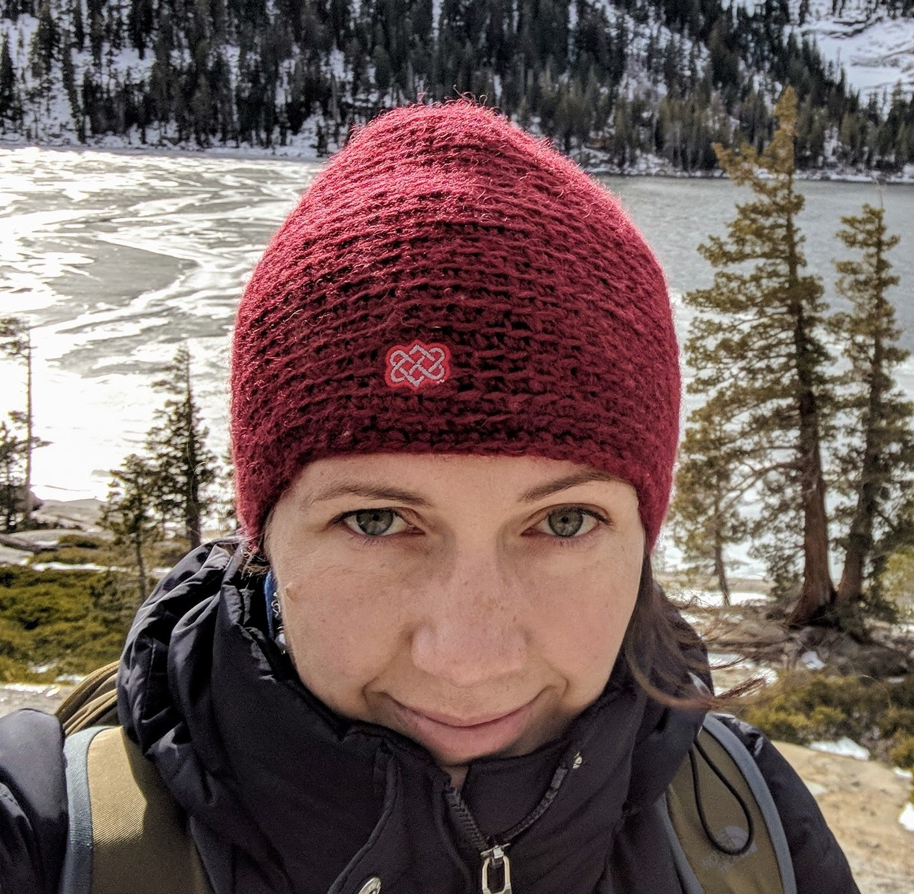

About Me
Sabine is both, a teacher and a student.
She taught science in High School, but studies currently Computer Science
and Graphic Design with emphasis on Web Development, and Machine Learning. The longterm goal is to develope
engaging apps for everybody who is interested in learning new skills.
If not studying or at work, you can usually find Sabine hiking in one of California's State Parks, brewing
a new beer recipe, or singing karaoke enthusiastically.